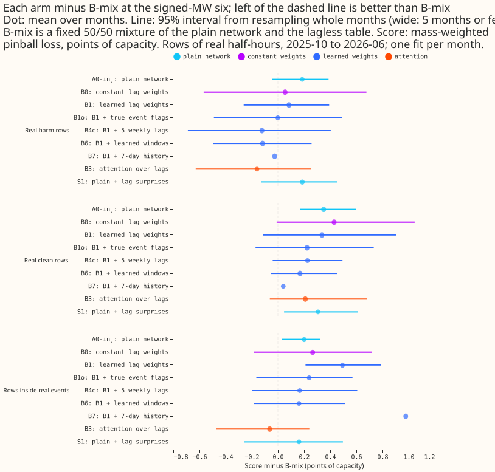
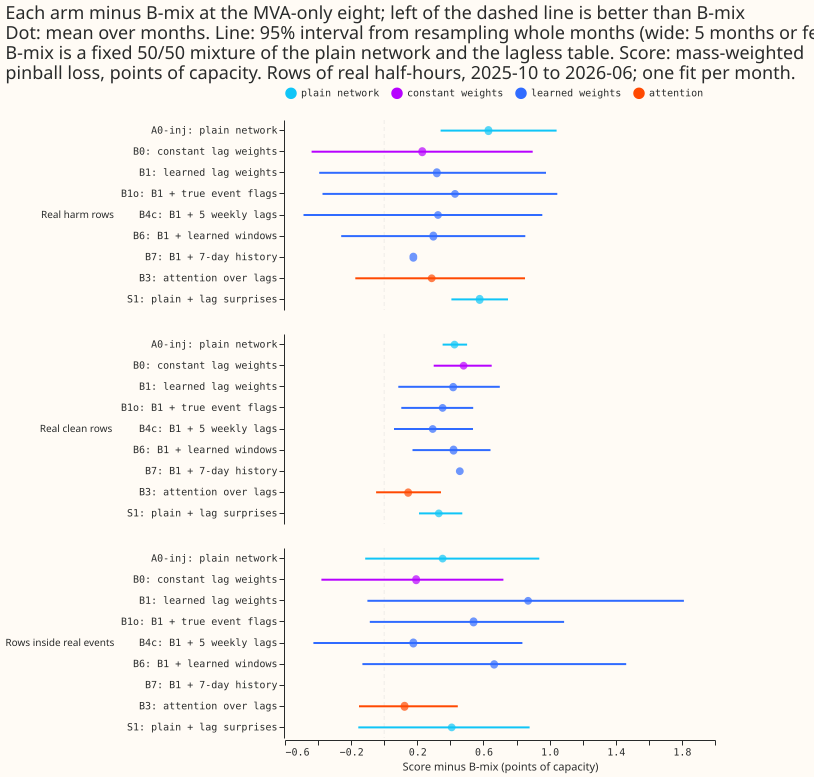
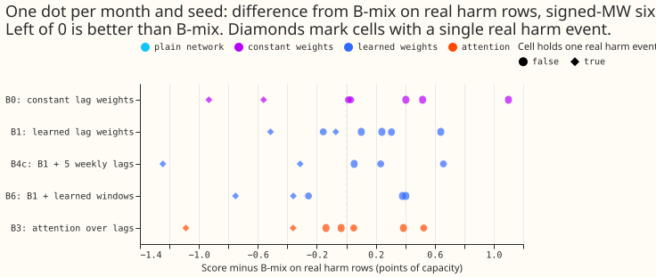
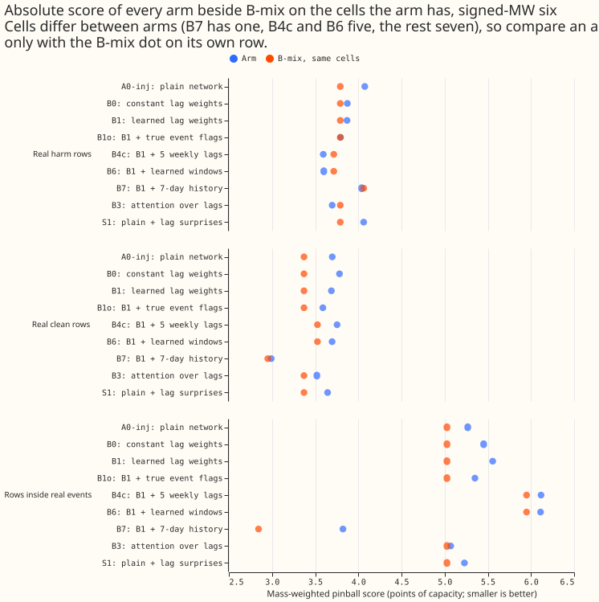
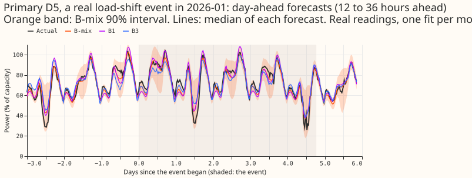
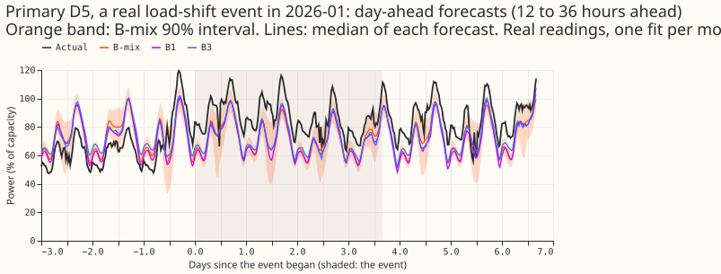
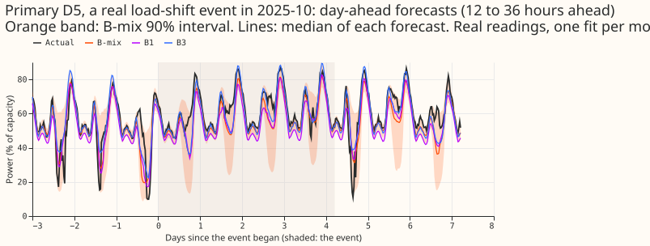
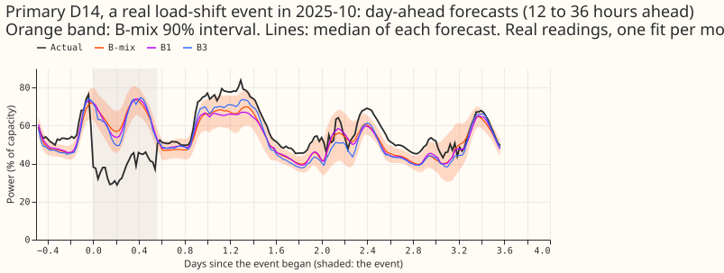
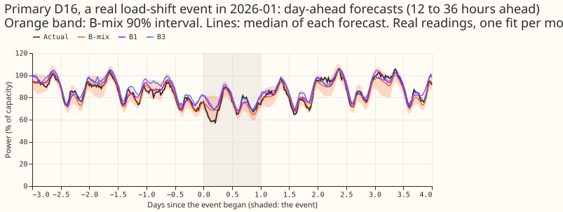
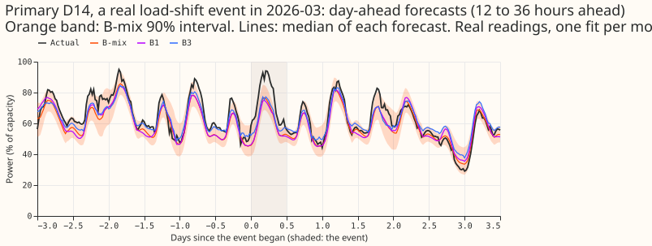

A learned trust weight for each lagged power reading does not beat a fixed 50/50 mixture around load-shift events
No variant we trained beats a fixed 50/50 mixture of the plain network and the lagless forecast (B-mix) on real harm rows at the signed-MW six, so the learned trust weights add complexity without a measured gain. The numbers are interim and unaudited: five scored months, one to three seeds per month, and no correction for multiple comparisons. Weighted by events, B3 (attention over the lags) is +0.13 and B6 (learned windows) is +0.15 points of capacity behind B-mix on real harm rows, and the ranges when any one month is left out include zero. Before weighting, B3 and B6 looked 0.14 and 0.02 points ahead, because two months that each hold a single real harm event pulled the average.
- The design is too small to see a difference below about 0.3 to 1.0 points of capacity. The smallest difference detectable with 80% power, from the spread of the five monthly values, exceeds most of the contrasts reported here. With a t multiplier instead of a normal one, the range is about 0.4 to 1.3.
- Inside real events, a single month decides the sign. Scored against NRA-corrected actuals, B0, B1, and B6 beat B-mix at the signed-MW six by 0.5 to 0.6 points. Dropping, in each month, the event that contributes most to the difference turns each of those into a loss of 0.2 to 0.3.
- The trust weights are almost inert. B1's mean trust is 0.91 outside real events and 0.94 inside them. B1o, which receives the true event flags, shows no consistent drop inside events.
Terms. NRA is the normal running arrangement, the electricity network as it is when no load transfer is active. An NRA-corrected actual is the metered actual with the load that experiment 435 estimates a real event moved between Primaries removed. A Primary is a primary substation. A load-shift event is a period when load was transferred between Primaries. Points of capacity are the score (CRPS, the continuous ranked probability score, computed from 11 quantiles) as a percentage of the Primary's capacity. The signed-MW six are the Primaries (D5, D9, D10, D11, D14, D16) that report signed power; the MVA-only eight report apparent power only.
What was tested. A trust head is a small neural network that outputs one weight per lagged power reading, saying how far to trust it. The experiment trained a mixture density network with a lagless module (a forecast that never sees recent power), a calibration module, and a trust head, on real power plus events injected by experiment 428. It compared the variants below with B-mix.
| Arm | What it is |
|---|---|
| B-mix | Fixed 50/50 mixture of the A0-inj forecast and the lagless forecast; the reference |
| A0-inj | Plain network on the injected data |
| B0 | Constant weight per lag (per group, lead band, and lag) |
| B1 | Learned trust weight per lag |
| B1o | B1 plus the true per-lag event flags (positive control) |
| B3 | Attention over the lags |
| B4c | B1 plus 5 weekly lags |
| B6 | B1 plus learned windows over the surprise series |
| B7 | B1 plus a 7-day history |
| S1 | Plain network plus the lag surprise at 3 lags |
A harm row is a forecast target outside every real event whose day window lies inside one, so a trust head should discount the lag. A clean row has no real event near it. The inert rule says a trust head is inert when its mean trust outside events minus inside events is under 0.1. Every contrast is the arm's score minus B-mix's, in points of capacity, so negative is better than B-mix. The arms B1g, B1m, B2, B4a, B4b, B5, and B1-rw are defined in the plan below.

Results
Event-weighted pooling and the size of the design
Weighting each month by its number of real events removes B3's and B6's lead on harm rows. The rows below are the signed-MW six on forecasts with leads from 0 to 240 hours (NGED's horizon is 1 to 10 days, and table P of experiment 435 uses the same range), raw quantiles. "Mean of months" averages the five monthly contrasts equally, "event-weighted" weights each month by the number of real-event clusters its rows touch (18 on harm rows, 25 inside events, 37 on clean rows), and "multi-event months" averages the three months with more than one harm-row event.
| Arm | Harm: mean of months | Harm: event-weighted | Harm: multi-event months | Inside events: event-weighted | Clean: event-weighted |
|---|---|---|---|---|---|
| A0-inj | +0.12 | +0.17 | +0.19 | +0.14 | +0.29 |
| B0 | +0.14 | +0.49 | +0.63 | +0.36 | +0.38 |
| B1 | +0.14 | +0.31 | +0.37 | +0.58 | +0.28 |
| B3 | -0.14 | +0.13 | +0.21 | -0.16 | +0.09 |
| B4c | -0.04 | +0.25 | +0.34 | +0.26 | +0.22 |
| B6 | -0.02 | +0.15 | +0.20 | +0.25 | +0.10 |
| S1 | +0.10 | +0.15 | +0.16 | +0.18 | +0.22 |
B3's and B6's lead comes from 2025-12 and 2026-03, which each hold one harm event. On harm rows B3 scores -0.92 and -0.42 there, and B6 -0.31 and -0.39. Averaged over the three multi-event months, every arm trails B-mix. Rescoring with the 1.15 widening of experiment 428, or with table P factors refitted on each arm's own earlier months (clean real rows, per group and lead band), moves every entry of the table by 0.03 or less, so the miscalibration of the tails does not explain the difference between the arms.
The design can detect a difference of only about 0.3 to 1.0 points of capacity. The minimum detectable effect, taken as 2.8 times the standard error of the five monthly differences (a normal approximation for a two-sided 5% test at 80% power), is 0.4 to 1.0 on harm rows, 0.3 to 0.9 inside events, and 0.3 to 0.8 on clean rows, depending on the arm. With four degrees of freedom the multiplier is about 3.6, which makes each figure about 30% larger. The range is rough, because five values give a poor estimate of their own spread.
The event counts differ by definition, not by error. In the five scored months 46 corrected events overlap the scored period (21 at the signed-MW six, 16 at the MVA-only eight, 9 at D15 and D18) and 42 padded event runs do (a run merges events that fall within the padding). Experiment 445's 49 and experiment 435's 41 count the same events with different windows. The label table's 112 is a row count, and 184 corrected events (170 padded runs) is the whole history. The bootstrap clusters used here are the events a row's lag windows touch, so they can exceed the padded runs.
The lagless table's 90% band is too narrow. It covers 79 to 82% of actuals on clean and harm rows in every lead band, and 48 to 52% inside events.
Scoring inside events against NRA-corrected actuals
A single month decides the sign of the result inside events. Experiment 435 estimates the load that each event removed from or added to the Primary (a measured deviation for 34 of 184 events, the labelled depth for the other 150). Subtracting that from the metered actual gives a corrected actual. The rows below score the real-event rows against it at three depth factors, at the signed-MW six, arm minus B-mix, mean over months.
| Arm | Depth 0.75 | Depth 1.0 | Depth 1.25 | Depth 1.0, largest event of each month dropped | Metered actual |
|---|---|---|---|---|---|
| A0-inj | +0.34 | +0.35 | +0.36 | +0.20 | +0.12 |
| B0 | -0.55 | -0.49 | -0.44 | +0.21 | +0.18 |
| B1 | -0.69 | -0.63 | -0.60 | +0.29 | +0.53 |
| B3 | +0.01 | +0.08 | +0.08 | +0.34 | -0.20 |
| B4c | -0.22 | -0.09 | -0.01 | +0.58 | +0.10 |
| B6 | -0.65 | -0.58 | -0.54 | +0.23 | +0.11 |
| S1 | +0.37 | +0.42 | +0.47 | +0.26 | +0.13 |
At the MVA-only eight every arm trails B-mix against the corrected actuals (+0.5 to +1.0 at depth 1.0, and +0.27 to +0.91 with the largest event of each month dropped).
Pooled over months, all leads
The tables and figures 1 to 4 below come from e00404_pool.py, on forecasts of every stored lead
(up to 14.6 days), so they differ from the audit tables above, which keep leads of 0 to 240 hours.
Each contrast is the mean over the arm's cells of the arm's score minus the reference arm's score on
the same rows, in points of capacity (negative is better than the reference), with a 95% interval
from resampling whole months (seeds within a month are averaged first, so the mean is a mean of
month means). A cell is one scored month and one seed. B-mix, A0-inj, B0, B1, B1o, B3, and S1 have
all 7 cells (2026-06 seeds 0 to 2; 2026-03, 2026-01, 2025-12, and 2025-10, seed 0). B4c and B6 have
5 cells (the five months, seed 0). B7 has 1 cell (2026-06, seed 0). Every interval is wide because
it rests on at most five months, the arms have different cells, only four cells hold a real-event
row at the MVA-only eight, a bootstrap over five blocks under-covers, and no correction for multiple
comparisons is applied.
No arm separates from B-mix at the signed-MW six, except that four arms have 95% intervals that exclude zero on the wrong side (A0-inj on clean rows and inside events, S1 on clean rows, B1 inside events), with the caveats above. B-mix is a fixed mixture of the saved A0-inj network's forecast and the cross-fitted lagless table's forecast, each with weight one half.
| Arm | Real harm rows | Real clean rows | Rows inside real events |
|---|---|---|---|
| A0-inj | +0.19 [-0.05, +0.39] | +0.35 [+0.17, +0.60] | +0.20 [+0.03, +0.33] |
| B0 | +0.06 [-0.57, +0.68] | +0.43 [-0.01, +1.05] | +0.27 [-0.18, +0.72] |
| B1 | +0.09 [-0.26, +0.39] | +0.34 [-0.11, +0.90] | +0.49 [+0.21, +0.79] |
| B1o | 0.00 [-0.49, +0.49] | +0.22 [-0.17, +0.73] | +0.24 [-0.17, +0.57] |
| B3 | -0.16 [-0.63, +0.25] | +0.21 [-0.06, +0.68] | -0.06 [-0.47, +0.24] |
| S1 | +0.19 [-0.13, +0.45] | +0.31 [+0.05, +0.61] | +0.16 [-0.26, +0.50] |
| B4c (5 cells) | -0.12 [-0.69, +0.40] | +0.23 [-0.04, +0.49] | +0.17 [-0.20, +0.61] |
| B6 (5 cells) | -0.12 [-0.50, +0.26] | +0.17 [-0.06, +0.46] | +0.16 [-0.18, +0.51] |
| B7 (1 cell) | -0.03 | +0.04 | +0.98 |
Score minus B-mix at the signed-MW six, in points of capacity. B-mix's own scores are 3.79 on real harm rows, 3.37 on real clean rows, and 5.03 inside real events (the values for the arms with 5 cells are measured against B-mix on those 5 cells).

B-mix is ahead on clean rows at the MVA-only eight. Every arm is worse than B-mix on real clean rows there (B3 +0.14 [-0.05, +0.34], the best; B0 +0.48 [+0.30, +0.65]). On real harm rows only A0-inj and S1 have intervals that exclude zero (B3 +0.29 [-0.17, +0.85]; B4c +0.33 [-0.49, +0.96]). Three of the seven cells hold a single real harm event at the MVA-only eight.

The pooled differences hide a large spread between cells. B3's difference from B-mix on real harm rows runs from -1.09 to +0.53 across the 7 cells, and the most negative values come from cells with a single real harm event (diamonds); the largest positive value does not.

B3 is ahead of B1 inside real events, and B6 is ahead of B1 on both row classes. The contrast against B1 at the signed-MW six: B3 minus B1 is -0.24 [-0.52, +0.03] on harm rows and -0.56 [-0.75, -0.36] inside events (7 cells); B6 minus B1 is -0.16 [-0.26, -0.03] and -0.31 [-0.58, -0.02] (5 cells). B0 minus B1 is -0.03 [-0.35, +0.29] on harm rows, so B1's learned weights do no better than B0's constant weights.
The trust weights are almost inert, even given the true event flags. The mean over the 7 cells of the geometric mean of B1's three trust weights is 0.91 on real rows whose lags lie outside real events (padded) and 0.94 inside them, so the inert rule (outside minus inside under 0.1) fires on the padded flag. B1o gives 0.91 outside and 0.90 inside. B0's constant weight is 0.98 everywhere.
Reading of the oracle control. B1o, with the true per-lag event flag as three extra trust-head inputs, scores 0.00 [-0.49, +0.49] against B-mix on real harm rows and +0.24 [-0.17, +0.57] inside real events, against B1's +0.09 and +0.49. The exact flags point to a gain of 0.09 on harm rows (-0.09 [-0.29, +0.10], an interval that includes zero) and of 0.26 inside events (-0.26 [-0.48, -0.05]), yet B1o stays behind B-mix inside events, so the limit may lie in the calibration module, the lagless forecast, or the mixture rule as well as in detecting events. Only the B1 version of the oracle exists.






The encroachment sweep shows B1 and B0 follow a shifted lag more than A0-inj does. A step of 5% of capacity added to the newest 3 lags moves the median of A0-inj by 0.12 of the step, of B1 by 0.22, and of B0 by 0.25 (lead band 0, 2026-06 seed 0). Band widths stay within 0.99 and 1.03 of their unshifted width for all arms, and the masked-lag control moves by 0.0 (about 1e-8) for B0 and B1. This is one month and one seed, covers all 16 Primaries, and the 3-lag step spans 7 days. The sweep was not run for B3, B6, or S1.
Which pre-registered predictions held (signed-MW six, real harm rows unless stated).
| Prediction | Observed | Verdict |
|---|---|---|
| P1: B1 minus A0-inj between -0.05 and -0.2 | -0.10 [-0.40, +0.22] | holds, interval includes 0 |
| P2: B1 minus B0 between -0.05 and -0.3 | +0.03 [-0.29, +0.35] | fails |
| P3: B1 minus A0-inj on clean rows under 0.05 | -0.01 | holds |
| P4: trust outside minus inside events at least 0.1 | -0.03 | fails (inert rule fires) |
| P5: B1 beats B2 | B1 minus B2 -0.76 (one cell) | holds on 1 cell |
| P7: A0-inj minus A0 below -0.1 on harm rows | +0.22 (one cell) | fails on 1 cell |
| P8: B5 within 0.03 of B1 outside events | B5 minus B1 +0.12 (one cell) | fails on 1 cell |
| P9: B3 beats B2 by under 0.1 | -0.74 on 2026-06 seed 0 | beats by more than predicted |
| P10: B4a to B4c within 0.1 of B1 | B4c minus B1 -0.16 [-0.50, +0.18]; B4a -0.18; B4b +0.29 | fails |
| P11: B6 within 0.1 of B1 | -0.16 [-0.26, -0.03] | fails: B6 gains |
| P12: B7 lowers harm-row CRPS by under 0.05 | +0.13 (one cell) | fails on 1 cell |
| P13: B1m within 0.1 of B1 | +0.06 (one cell) | holds on 1 cell |
| P16: B1 minus B3 between -0.05 and +0.05 | +0.24 [-0.03, +0.52] | fails |
P6 (the MVA-only eight is inert) and the batch 0 prediction P0 are not tested on this page. B8, B9, B1-rw, and B1-nn were not run, and neither were P14 and P15.
Deviations from the plan. The batch 1 stop rule did not fire, and batch 2 ran on the manager's direction ("iterate rather than stop"). B-mix, S1, B1g (B1 plus the gap between the lagged and lagless means), B1o, and the encroachment sweep were added after the plan was written. B1g is indistinguishable from B1 (harm rows -0.17 and -0.16 against B-mix on 2026-06 seed 0). Training and scoring worlds come from experiment 428's injected worlds, and the lagless tables were cross-fitted with K=6 contiguous blocks.
Question
We test whether one neural network can learn how much to trust each lagged power reading, with no event labels. A load-shift event moves demand between neighbouring Primaries for hours or weeks. The power the network sees at the same time yesterday or last week can then be abnormal, and a forecast that copies that power inherits the abnormality. NGED cannot supply event labels for about 1,300 substations, and every binary event detector tried so far has scored poorly. The maintainer's design replaces the detector with a continuous trust weight per lagged input, learned end to end.
- Lagless module. A mixture density network (3 Gaussians) that sees weather, solar geometry, calendar, holidays, and a Primary embedding, and no power lag.
- Calibration module. A second network that outputs a lagged mixture (3 Gaussians) from the lagless forecast, the three lags, the Primary embedding, and an indicator of signed-MW or MVA-only metering. It does not see the trust inputs.
- Trust head. A separate small network that reads only the trust inputs below, the lead time, the Primary embedding, and the metering indicator, and outputs one weight in [0, 1] per lag. Feeding the trust inputs only to this head stops the calibration module from falling back on the lagless forecast inside the lagged head, which would leave the trust weight unidentified and let it collapse to a constant, as the logistic gate of experiment 400 did (about 0.6).
- The three lags.
lag_origin(the newest reading before the forecast origin),lag_same_time_latest_day(the reading at the target's time of day on the latest day before the origin), andlag_same_time_latest_week(the same on the latest week before the origin), as in the weekly XGBoost member. Each carries its age in hours and an is-missing flag. - Output. A mixture of the lagless and lagged distributions (6 Gaussians), never an average of quantiles. The weight on the lagged mixture is the product of the 3 per-lag trust weights, so one untrusted lag lowers it, and the lagless distribution takes the weight 1 minus that product. Arm B1m replaces the product by the mean of the 3 weights.
- Training scheme (a departure from fully end to end). Cross-fitting makes the lagless forecast a precomputed table. The lagless module trains on its own mixture negative log-likelihood, and the rest of the network trains on the final mixture negative log-likelihood of the clean series, on injected events, with the lagless forecast held fixed. No separate stage on event labels is used. The fully joint version, in which the lagless module trains jointly with a stop-gradient and no cross-fit, is arm B9, run last and labelled in-sample.
- Series. Each Primary series is one series per substation.
Review against the latest evidence
The plan was reviewed against the pages merged since the brief was written (experiments 387,
398, 399, 401, and 403, and the standing practices of the ml-experiment skill, read from main on
2026-10-30). Four changes follow; none alters the scope.
- Fixed-mixture control. Experiment 401's advice is to use a fixed mixture with a weight of 0.3 to 0.5 on the forecast with lags as the control for any learned blend at the signed-MW Primaries. The plan adds a free arm F0: a fixed mixture, with weight 0.4 on the lagged forecast of A0-inj and 0.6 on L0, computed from stored forecasts. F0 is reported at the signed-MW six only, and not at the MVA-only eight or at D15 and D18.
- How the lag response is measured. The lag response is the forecast with lags minus the forecast without lags on the same rows, and never 1 minus the residual over the labelled step.
- Standing practices followed. Monthly refits; cleaned data, with the number of dropped
substation_zerohalf-hours reported per fold; the D15 and D18 cut at 2025-03-01; every fitted network saved in the experiment's data folder; stored predictions reused as references; tails and the avoidable-curtailment cost reported beside CRPS; example forecast plots and event plots; draft pull request. The plan departs from the practice of four screen folds: it uses the five screen folds of experiment 397, so that its scores sit on the same rows as experiments 397 and 403, and labels every number interim. - Evidence that tempers the expected gain. Experiment 401 found real events move the forecast
by 0.03 of the step or less, and that one event at D16 carries most of a fixed mixture's gain at
the six. Experiment 402's
ceilings3.txtfound the flag oracle's gain has an interval that includes zero. The batch 0 and batch 1 stop rules already encode this.
Design choices fixed by this plan
The smoother and the surprise source are fixed here because the brief leaves them open. Each is a stated choice; a different choice is a later experiment.
- Light causal smoother. After the trust head, a causal moving average of 3 half-hours is applied over the lag's valid times, so that weights do not jump between adjacent half-hours. Events start suddenly, so the smoother is short. The write-up reports how many half-hours the smoothed trust weight takes to cross 0.5 after an injected onset, beside the unsmoothed weight.
- Trust weights start at 0.5 with no regulariser. The write-up reports whether they stay near 0.5.
- Stop-gradient. The surprises and the gap between the lagged and lagless medians pass through a stop-gradient, so the lagless module cannot shape its own surprises through the trust head.
- Cross-fitted lagless forecast (leakage rule). For each monthly refit, the months before the scored month in the training window are split into K = 6 contiguous blocks. For each block, a lagless module is fitted on the other 5 blocks and forecasts the held-out block. The 6 cross-fitted forecasts form the table of out-of-sample lagless forecasts for the training rows. One further lagless module is fitted on all months before the scored month, for the scored month and for test-time inference. A lag whose valid time falls before the scored month takes its surprise from the cross-fit table and not from the further module, because the further module was fitted on those months. The table is shared across all arms and seeds, and is fitted once per refit and seed. The calibration module and the trust head both take the table's lagless mixture as input in training, and the further module's mixture at test time. A stop-gradient on the lagless forecast stops the lagless module shaping its own surprises. Cross-fitting never uses the scored month or later. The other blocks include later months than the held-out block, which a live forecast would not have, so the training surprises are somewhat larger than a fully fitted lagless forecast would give; the write-up lists this mismatch as a caveat. If the timed fits show K = 6 is too expensive, the plan settles on a smaller K and tells the manager.
- Forecast origin and lead of the lagless forecast. At a lag's valid time, the lagless forecast uses the ECMWF ENS (European Centre for Medium-Range Weather Forecasts ensemble) mean and spread of the freshest run available at the forecast origin (the latest run published by the valid time, leads 9 to 33 hours). That run exists at forecast time. ERA5 is not used. The training table applies the same freshest-run rule at every origin.
- One pass on the ensemble summary. The network sees the ENS mean and spread of each weather variable once. The 51-member scheme runs only as a check on the best arm.
Trust inputs
- Per lag. The single-step surprise (the lag minus the lagless median at the lag's valid time) in capacity-normalised MW, kept signed, and the same value in units of the lagless band width. Both are given, because a clipped score loses magnitude.
- Per lag, window statistics of the surprise over windows centred on the lag (half-widths 1.5, 3, 6, 12, and 24 hours, and 84 hours for the week lag only): mean, median, minimum, maximum, standard deviation, signed sum, count above the band, and a 12-hour triangular tent mean. Every window is truncated at the forecast origin and at the telemetry cut-off, and a truncated tent is renormalised to sum to 1.
- Neighbours. The same quantities for neighbouring Primaries from
neighbours_nged.json(in the folder of experiment 383), with the signed logic learned and never hand-coded. Bulk supply points are added if their stored series exist; if not, the write-up says they were left out. At scale the graph must come from the data (for example the correlation of forecast residuals); the write-up states what that needs. - Lag age and is-missing flag for each lag, and the gap between the lagged and lagless medians.
- Recomputation after injection. Every one of these inputs is recomputed from the injected series, including the neighbour, bulk-supply-point, B6, and B7 windows.
Arms
All arms use the pooled plain mixture density network of experiment 397 (arm plain_pooled) as
their base: one network for all 16 Primaries, a learned Primary embedding, a 3-component Gaussian
mixture head. The maintainer's update of 2026-10-30 moved the base from the uniform-token arm of
experiment 397, called U0 here, to the plain network. The interim scores of experiment 397
(unaudited) were
3.264 at the signed-MW six and 3.860 at the MVA-only eight for the plain network, against 3.320 and
3.775 for U0, and the plain network's lead rests mainly on one fold, so this
plan infers no ranking between them. Both modules get the Primary embedding. The group gate over
input groups stays closed in every arm. Every arm trains on the injected data below, except A0.
Batch 0 (a cheap check before batch 1). Re-score the stored forecasts of experiment 402 on harm rows with the lags inside each real event replaced by clean counterfactual values, using experiment 401's harness. This gives the most that any lag-trust method can gain, because experiment 401 found real events move the forecast by only 0.02 to 0.03 of the step, yet the forecast with lags scores 5.119 against 4.292 without lags on harm rows, so most of that gap is the two forecasts differing as whole forecasts. If the counterfactual gain is under 0.1 CRPS points at the signed-MW six, the plan skips batches 1 and 2.
Deviation from the batch 0 rule. Experiment 411 ran batch 0 and was inconclusive. The gain at the signed-MW six was -0.836 CRPS points (95% interval -2.578 to +1.226) on 9 events. One D5 event flips the sign: without it the gain is +0.460 (95% interval -0.102 to +1.631). At the eight MVA-only Primaries the gain was +0.024 (95% interval -0.574 to +1.529). The harness scored only 15 of the 184 corrected events. Experiments 411 and 414 reached only 9 signed-MW-six events. The 4 test months and the sign, step, and bias filters capped that count, not gaps: 129 of the 184 events lie outside the test months. The ceiling is therefore a thin figure from XGBoost models alone. Batch 1 runs regardless, with no 12-refit extension and no looser event filters on this experiment's account. The point estimate is under 0.1, so the rule as written would skip batches 1 and 2, but the interval spans zero. The neural Discuss session therefore ruled that batches 1 and 2 run. The batch 1 stop rule stays as written.
Batch 1:
- L0 (free). The lagless module's own forecast, scored on all rows and on harm rows. Experiment 402's weights suggest the lags help the signed-MW six only at days 1 to 2, and L0 shows that directly.
- A0. The pooled plain network with the three lags, trained on the plain clean data (the reference for the architecture alone).
- A0-inj. A0 trained on the same injected data as B1. B1 minus A0-inj isolates the architecture, and A0-inj minus A0 isolates the training data.
- B0. Constant trust: B1's architecture with one learned constant trust weight per metering group, lead band, and lag that does not depend on the trust inputs (the control experiment 400 recommended). B1 minus B0 isolates the trust inputs.
- B1. The architecture above, with the three lags.
- B2. A0-inj with token-level lag dropout during training (each lag token zeroed with probability 0.2 and flagged missing) and no lagless module.
- B5. B1 without
lag_origin. - B-mix (reference, free). A fixed 50/50 mixture of A0-inj's lagged forecast and the lagless module's forecast (the neural Discuss session's request, 2026-10-31). It is scored on the same harm rows and event slices as every arm. Experiment 402 step 4 (interim, unaudited) found that a simple mixture captured most of a lag-surprise gate's gain on injected shifts at the six signed-MW Primaries (mean CRPS 4.307 for the mixture, 4.250 for the gate, 4.576 with lags, 4.439 without). Any trust head or attention over lags in this experiment must beat B-mix to count.
Design iterations after batch 1 (maintainer, 2026-10-31). The maintainer expects several design iterations (tokens and attention) and is optimistic about the idea, so a null at batch 1 does not end this experiment. The plan allows at least two design iterations after batch 1 before concluding. The batch 1 stop rule still decides whether the full batch 2 grid runs. If it fires, each iteration changes the trust head or the attention over tokens, is scored on the same rows against B-mix, and is reported as one more named arm. The manager is asked before the total passes 12 hours.
Batch 2 (runs straight away if the batch 1 stop rule does not fire):
- Carry-forward rule (maintainer, 2026-10-30). B3 attends across the lag set that wins among B4a, B4b, B4c, and B1's three lags, together with the XGBoost lag experiment 388 when its page is available. The order of work therefore runs B4a, B4b, and B4c before B3. If B3 has already run with the 3 lags, it is rerun with the winning set. The adopted set is named in the arm label (for example B3-lags5), and the write-up says which earlier components were adopted and which were not, with the reason.
- B3. B1's lagless module and cross-fitted table, with an attention gate in place of the trust head and the product rule. The gate attends over 4 tokens: the 3 lag tokens (each the lag value with its age, missing flag, and trust inputs) and a lagless-forecast token. Its query is built from the lead time, the Primary embedding, and the metering indicator. The output is the gated sum of tokens fed to a 3-component mixture head. B3 minus B2 tests attention over lags, and B1 minus B3 compares the trust head with attention.
- B6. B1 with a 1D convolutional neural network over the surprise series in a window of 24 hours either side of each lag (97 half-hourly steps), in place of the hand-built window statistics. Each window is zero-padded and truncated at the forecast origin. The network has two convolution layers (kernel 5, 16 channels) with global pooling.
- B4a, B4b, and B4c. B1 with more lags: the same weekday and time from each of the last N = 1, 3, and 5 weeks, plus the median across the N weeks and the median minus the latest week. The three values of N are three separate arms.
- B8a and B8b (low priority; run after B1 reads clean). B1 plus an auxiliary probe head that reads the trust head's hidden layer and predicts, for each lagged timestep, whether the injected generator put it inside an event or a spike. The loss is binary cross-entropy at a weight of 0.1 of the mixture loss in B8a and 0.3 in B8b. The probe trains only on the injected labels, which are known truth and need no NGED label, and it is never used at forecast time. Real-event labels come from the 112-row corrected table, so the write-up reports the event count per metering group beside every area figure, and says plainly if the probe works on injected events and fails on real ones, which would mean the injection is unrealistic.
- B1m. B1 with the mean of the 3 trust weights as the mixture weight.
- B1-rw and B1-nn (neighbour controls). B1-rw replaces each Primary's neighbour inputs with those of a degree-matched randomly chosen set of other Primaries (the graph rewired, with the same number of neighbours). B1-nn removes the neighbour inputs. B1 minus B1-rw tests whether neighbour identity matters in the trust head, and B1 minus B1-nn tests whether the neighbour inputs matter at all. The cross-fitted tables are reused.
- B9 (last). The fully joint version of B1: the lagless module trains jointly with a stop-gradient and no cross-fit. It is labelled in-sample.
- B7 (lowest priority; runs last). B1 plus a 1D convolutional neural network over the latest 7 days of actual demand up to the forecast origin, with the same trust inputs.
The maintainer's expectation (not a result): B1 beats B2.
Training data and events
Training uses injected, load-conserving events with clean targets. A drop at a donor Primary
reappears at the connected recipients, with the depth as a share of the donor's trailing 30-day
mean (truncated at the forecast origin). Durations and depths follow the corrected label table
sw_block_detector_label_table_corrected.csv in the folder of experiment 395 (use the corrected
signs). In 30% of events no recipient is observed (a guess, varied as a sensitivity). Transient
spikes that are not load shifts are injected too. The targets stay clean, so a target is never
inside an injected event. The loss is the mixture negative log-likelihood, which is a proper
scoring rule like CRPS and is what experiment 397 used.
Injection rate. 20% of training rows have at least one lag inside an injected event or spike, against about 2.6% in real data. The rate is a stated default, and the worker states and justifies any change. The injection is fixed per refit and seed, saved to disk, and not resampled each epoch. The generator tunes its coverage on the real arrays until the realised share of rows reaches 20%.
Which experiment the injection follows. Experiment 395 Parts E and F disagree on the share of a step that reaches the forecast (36.8% with all three lags affected in the synthetic sweep of Part E, against a median share of 0.94 for real events in Part F; experiment 401 shows the 0.94 is not a lag effect). The injection writes the full event depth into the lag values, as a real event does, and does not set a share of the forecast. The share that reaches the forecast is then an output, measured by the lag-encroachment sweep.
Realism check before training: match surprise statistics, not a lag response. In experiment 401's counterfactual (replace the lags inside each real event and re-predict), the real lag response of the forecast is about 0.02 to 0.03 of the event step, against 0.32 to 0.34 for synthetic events of the same kind (interim and unaudited). That response belongs to the fitted forecaster and not to the injection, so the plan does not tune the injection to a response. It matches the injected surprise statistics (the window statistics of the surprise series, the event depth as a share of the series, and the duration) to those of real events, and redesigns the injection if they differ by more than a factor of 2, as the lag-gate brief requires. For each fold, the injected depths and durations are drawn, and all tuning is done, only from real events outside that fold's scored month, so that the events that score an arm never tune its training data. The write-up reports the fitted network's counterfactual lag response on injected and on real events as a diagnostic. Every arm is judged on real events as well as injected ones. The plan follows experiment 395 Part F (the full depth in the lag values) and not Part E.
Evidence on constant-step injection. Experiment 402's redone step 2 (interim, unaudited) gave the median share of a step passed on by the R1 boosters as 0.133, 0.150, and 0.305 for real events with 1, 2, and 3 lags inside, against 0.146, 0.158, and 0.328 for a synthetic constant step (ratios 1.05 to 1.10; 17, 14, and 6 events). The factor-of-2 rule does not fire, so a constant-step injection is realistic for those boosters, and experiment 402 repeats the check on its R0 lagged boosters. The two experiments measure different quantities: experiment 401 takes the forecast with lags minus the forecast without lags, and experiment 402 takes the share of the step passed on. The plan uses both as diagnostics on the fitted networks and does not tune the injection to either.
Harm-row results are a lower bound. Because some events are unlogged, harm-row results are reported as a lower bound on harm. Our series are one per substation, not per transformer, so a transformer-level event that conserves load across a substation's transformers does not appear.
Shared injected worlds and B-mix (agreed with experiment 428, 2026-10-31). Both experiments
read experiment 428's world files seed{N}.npz (power over capacity, shape [16, grid], and the
event code, shape [16, grid]; the data folder of experiment 428, work/worlds/), built by
experiment 402's inject on experiment 422's cleaned power with 10% coverage over 2024-05-01 to
2026-07-01. Training uses seeds 100 to 102 and scoring uses the held-out seeds 200 to 202, so the
scored months contain injected events and harm rows. Row classes come from experiment 428's
e00428_predict.Flags. B-mix halves the weights of the lagged forecast's components and of the
frozen lagless table's components and pools them on the capacity scale. Experiment 404 therefore
does not run its own injection.
Frozen lagless table. The cross-fitted lagless tables are frozen as built on 2026-10-31 by
commit 63d3799f of this branch: K = 6 contiguous blocks, a pooled module with a Primary
embedding, 6 epochs, seeds 0 to 2, and scored months 2025-10, 2025-12, 2026-01, 2026-03, and
2026-06. Experiment 428's surprise-channel arm and recent-history encoders read the same files, so
no rebuild happens unless the experiment 428 worker and the manager agree first. In the 2026-06
table the 90% band covers 0.81 of observed power for the cross-fitted rows, so the bands are
somewhat narrow, and the write-up states this.
Generator. This experiment imports experiment 402's generator (e00402_inject.py), merged to
main in PR 56 under ml-experiments/00402-lag-gate-learned-weight-injected-load-shifts-part-1/.
The merged file differs from the draft copy first used here: the donor change is computed from the
donor's mean over its whole series and keeps the donor's shape. It differs from the generator first
written here in four ways: spikes are 4 to 20 times the stage-1 residual median absolute
deviation, MVA-only Primaries receive events only where the reading stays above 20% of capacity,
and base periods can exclude windows with a large stage-1 surprise. The signature takes the
MVA-only set and each Primary's residual deviation in MW. The write-up says which commit of the
generator each fit used.
The depths and durations come from the table's real events, so the test distribution informs the
generator's distributions even though the real events never enter training; the write-up states
this.
Caveat on unlabelled events (carried into every write-up). NGED says load-shift events may be missing from its logs. The clean-lag rows and the clean training periods can therefore contain events that no label covers. The harm table's clean-lag baseline is then optimistic, and the real-event slices undercount the rows whose lags lie inside an event. Injected events stay the main training signal because they need no logs.
Real events are a held-out test only. The label table's events never enter training. The write-up reports the real-event count per fold and excludes folds without label coverage from the harm rows.
Leakage rules
- Cut every training row whose valid time is on or after the first day of the scored month.
- Truncate every window of every lag at the telemetry cut-off and at the forecast origin.
- Take surprises only from the cross-fitted lagless forecast described above, recomputed against the injected lag values after injection (surprises from the clean series would carry no event signal), never from the scored month or later.
- Inject the donor and its recipients together, so that the neighbour inputs never leak the clean value.
- Drop flagged exact-zero half-hours (
substation_zero) from training, lags, inference, and scoring actuals. - For D15 and D18, drop every row before 2025-03-01 from training rows, lag inputs, inference inputs, and scoring actuals (maintainer rule, 2026-10-30). This experiment does not test the cut. Experiment 399 may later supply better per-Primary dates, and the plan then follows them.
Scoring
- Harm rows (defined once). A harm row is a half-hour of the real held-out data whose target is outside every real corrected event (unpadded, with the 7 days after each event excluded, as experiment 400 did) and at least one of whose 3 origin lags lies inside a real corrected event. The B4 arms' extra lags do not redefine the harm rows. A contrast on harm rows is the difference of the two arms' mean CRPS on those same rows, and scoring uses real data only.
- Three row sets, scored separately beside the headline (the neural Discuss session's request, 2026-10-31): harm rows, clean rows (no lag and not the target inside an event), and rows whose target is inside a labelled real event. Experiment 402's slice tables (interim, unaudited) found that an injected-trained gate protects harm rows without losing on clean rows, but is worse than the fixed 50/50 mixture where the target is inside a real labelled event (signed-MW six: 10.75 and 11.42 against 10.50 and 11.25, in points of effective capacity), because it cuts the lag weight to about 0.4. All experiment 402 figures are interim until its page merges. Every arm, B-mix included, is scored on all three sets, with whole-event bootstrap intervals.
- Dominant events and coverage (neural Discuss session, 2026-10-31). Real-event gains rest on very few events: in experiment 402 (interim, unaudited), one D16 event carried 110% of the step 1 flag-oracle gain and one D5 event carried 64% of the real-harm gain. The write-up lists the events that dominate each real-event slice and reports each slice with and without its largest event. It also reports the 95% quantile's coverage inside real events beside CRPS, because every arm of experiment 402 covered only 0.65 to 0.68 of the targets there (target 0.95). The signed-MW six and the MVA-only eight are scored separately everywhere, because at the eight the gate beat the 50/50 mixture inside a real event and at the six it did not.
- The harm table of the lag-gate brief: rows whose target is outside every event but whose lags lie inside one, minus the rows with clean lags, by number of lags inside the event. Each arm minus A0 on the harm rows, with whole-event bootstrap intervals.
- The lag-encroachment sweep (experiment 392's protocol, required of every load-shift experiment
by the maintainer, 2026-10-31): add a step of 5% of capacity to the lags of clean rows for k = 1,
2, and 3 lags, and report the median's shift as a share of the step, the band width ratio, and
where the probability mass sits, for every arm. The code path and protocol come from the merged
experiment 392 scripts on main (
e00392_sweep.py:shifted_matrix,clean_rows,sweep_site,widen,with_ratios). The protocol adds D (5% of capacity, and 2.5% for neural networks, both signs) to the 1, 2, then 3 most recent lag columns of clean rows, over the lead bands from 24 to 72 hours and the others, on the four screen folds, with an origin stride of 3 and the 1.15 widening. It reports the median shift as a share of D, the band-width ratio, and the coverage of clean and event-level readings. Experiment 404's network needs a predict-on-modified-lags interface for it. The sweep also includes a lag-masked control, whose shift must be exactly 0, the trust weight of each lag at each k, and 3 seeds. - Probe (B8). The precision-recall area of the probe on held-out real events from the corrected label table, per metering group.
- Loss outside events and the overall five-fold CRPS, per Primary.
- Tails. Coverage and pinball loss at q01, q05, q95, and q99, raw and at the 1.15 widening, beside every headline score.
- Example forecast plots (maintainer rule, 2026-10-30). Example time series charts of probabilistic forecasts against the actuals: one day-ahead forecast, and one full 14-day horizon of a single forecast, with bands that widen with the horizon. Both are shown for one signed-MW Primary and one MVA-only Primary (4 charts), and one further chart shows a real load-shift event. Each shows the actuals, the median, and the 90% band for B1 and the reference arms. Substations are not covered by the anonymisation rule, and no metered generator's series appears here.
- Event time-series plots (maintainer rule, 2026-10-30). At least 6 plots, covering both metering groups (at least 3 from the signed-MW six and 3 from the MVA-only eight), each marking when the event starts and ends and showing the actual power, the median forecast, the 90% band (q05 to q95), and the trust weight of each of the 3 lags (for B3, the per-lag attention weights). Each plot compares the reference arms (A0, A0-inj, B0) with B1 on the same event. The set includes real events from the corrected label table, injected events, and at least one transient spike, and each plot is labelled real or injected. The set also includes the failure cases: the plots with the largest harm-row loss, not only favourable examples. Both groups of events use anonymised labels only where a metered generator's series appears, and none does here.
- Checks. The median minus the mean forecast per Primary, the error of the mean beside every
quantile-score contrast, and which of the seven audit triggers of the
ml-experimentskill fired. - Saved outputs, per arm, fold, and seed: per-row per-lag trust weights, the combined trust, the event class of each row (inside, touching, or clean, unpadded), per-row CRPS, B3's attention weights, the B8 probe scores, and the forecast quantiles q01 to q99.
- Folds, seeds, cadence. The five screen folds of experiment 397, monthly refits, 3 seeds. More seeds only for a contrast within the seed noise.
Code reviews
A fresh Sonnet review of the lagless builder ran before its first build. It found no leakage of the scored month. It found that the cross-fit scaler used the held-out block's statistics, which the builder now avoids by fitting a scaler per fold, and an off-by-one in the first valid index.
A fresh Sonnet review of the training, scoring, and trust-input code ran before the first fit. It found six defects, all fixed or recorded. The forecast rebuilt its scalers from all origin days instead of the saved training scalers (fixed). The padding between Primaries was too short for lag centres before the table start (fixed). The score weighted unevenly spaced quantile levels equally (fixed with the project's level weights). A clamp on the lagged weight zeroed its gradient (fixed). The product rule identifies only the product of the three trust weights, so the per-lag columns cannot be read as per-lag trust, and the write-up does not interpret them. The B3 gate takes the lead, the Primary embedding, and the metering indicator, not the trust inputs, as the plan says. B0 now learns one weight per metering group, lead band, and lag.
Interfaces for the later evaluation experiment
A separate lag-trust evaluation experiment will run on this experiment's saved networks once the
maintainer releases it (manager, 2026-10-31; design in
briefs/lag_trust_evaluation_design_answer.md, section 4). The maintainer holds it until
experiments 404 and 428 have each had several design iterations and a design is picked, so batch 1
does not trigger it. This experiment therefore builds in five interfaces, and saves every fitted
network:
- A predict function that accepts modified lag values and recomputes every trust input from them
with the
e00404_trust.pyfunctions. - Per-row outputs: the trust weight of each lag, the combined trust, and the q01 to q99 quantiles of the final, lagged, and lagless mixtures.
- Inference overrides for the neighbour inputs: off, rewired, shuffled, and time-shifted.
- A deterministic evaluation mode with dropout off, so the lag-masked control returns exactly 0.
- Saved per-row tables keyed by Primary, origin, valid time, seed, and event class.
The write-up says which event count each figure uses: experiment 402's label rows (133 rows, 112 usable) or experiment 411's 184 corrected events. Experiment 392's one-lag figure is 0% to 2%.
Compute
The concurrency limit is 1 GPU process under 8 GB of GPU memory, 1 feeder core, and
MemoryMax=8G, a stricter slot than the brief's 16 GB, because of the machine's load. The
manager asked for a request for more resources if a batch would take over 12 hours.
Fit counts. Each fit is one arm on one refit with one seed. The brief reports 50 to 200 seconds per fit and about 600 fits in all; the plan's own count follows, and the first task after the slot is granted is to time one fit of each kind and report K and the timed duration to the manager.
- Cross-fitted lagless networks. 6 block fits plus 1 final fit, so 7 per refit and seed, and 105 over the 5 refits and 3 seeds. They are precomputed once per refit and seed and shared by every arm.
- Injected windows. The injected series and every window statistic, neighbour input, and B6 or B7 window are precomputed once per refit, with a fixed injection seed, and shared by every arm and seed.
- Batch 1. 6 arms times 5 refits times 3 seeds is 90 fits (A0 is read from experiment 397 if its rows match, which would remove 15).
- Batch 2. B3, B6, B4a, B4b, B4c, B8a, B8b, B1-rw, B1-nn, B1m, B7, and B9 are 12 arms, 180 fits.
- Memory per fit. A pooled refit has about 7 million rows. With the trust inputs (about 150 columns in float32) the host matrix is about 4 GB, which fits the 8 GB cap with the batch streamed to the GPU in blocks of 16,384 rows. B6 and B7 add window tensors that are built in blocks from the precomputed series, not stored in full. These figures are estimates; the first task after the slot is granted is to time and measure one fit of each kind.
Order of work once granted: batch 0 (the counterfactual re-score of the stored forecasts, which takes no fit); the cross-fitted lagless networks; the realism check; A0 (reused if experiment 397's rows match); A0-inj; B0; B1; B2; B5; the stop-rule check; then batch 2 if the stop rule passes, in the order B4a, B4b, B4c, B3, B6, B8a, B8b, B1-rw, B1-nn, B1m, then B7 and B9. Every arm is in scope over the weekend, gated only by the pre-registered stop rules.
Problems caused by the move
(The move of the research code from the production repository to this one.) None so far. Experiment 397's modules live on an unmerged branch, so this experiment copies the files it needs into its own folder.